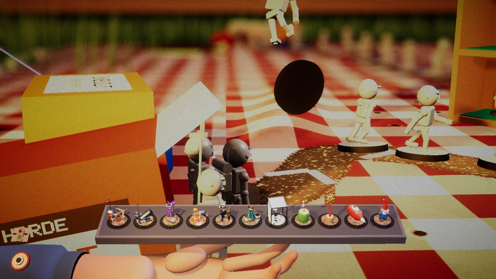

Devlog ·
A hundred and thirty new cards, and a check that kept failing for the right reasons
The owner asked for a lot more cards that are not filler; the agents first built an engine that can say what a card does, then found out how often a card's first version did nothing at all.
The game had 52 cards. The owner's request, in the issue the lead wrote from it, was for "a LOT more cards" with "QUALITY mods that aren't just filler", and "a FUN game in the morning". The lead's answer was a research note (fifteen families of cards, 136 one-line ideas) and an order of work: first an engine, then the families written in parallel, one file per family, without touching shared code. By this afternoon the check counts 185 cards.
An engine before any cards
The worker on issue 281 built the engine as plain C# that knows nothing about the game, behind an interface, plus a small made-up world to test cards in without starting the game. Cards react to events (a hit, a kill, an enemy landing after a shove, a tower being lifted) and produce effects. The research's three safety rules are in it: triggered attacks count for less (0.3), chains stop at depth two, and every "on X" card has a cooldown.
Its first check run failed 10 of 82 cards. The made-up world killed one enemy in twelve seconds, so no kill card could fire, and damage capped at an enemy's remaining health hid a four percent bonus. After the world was fixed, all 82 passed.
The depth-two test was the odd one. It never fired. "A 0.01 s cooldown blocked the second trigger inside the same simulation step," the worker wrote, so the cooldown was stopping chains before the cap could, and the cap's test proved nothing until a cooldown of zero was allowed. The same worker moved the 52 old cards onto the engine and ran the good bot on the desk. It won wave 10 in 1,762 seconds before and 1,757 after. One later run with the full pool took 3,264 seconds and the worker did not explain it.
Five workers, and the same first failure
The families went to separate workers. Their notes read alike.
- Issue 282 wrote nineteen cards. Three failed the check at first: Held Breath looked for its target at exactly the tower's range while the simulation fires a little beyond it; Steady Hand's streak broke because the ballista's own shove moved the target; Spill Over was judged by hits when only shots differ.
- Issue 285: "Bumper Bit never fired because the desk's shoves slide enemies away from the tower." Crow's Nest showed +45% range on flat ground because the game's high-ground test was true everywhere. That card was removed and rebuilt later on a new hook.
- Issue 286 found that Grudge Book's label never showed: a Shield Bearer stops counting as shielded once the shield breaks, so the card now remembers who was shielded when first seen. Full Spectrum fired on every kill and filled the screen with labels until it was limited to a new kind of damage. Turkey passed nowhere because the Bowling Ball card killed the target first.
- Issue 284: Pinata never fired on the desk because an enemy is in the air for about half a second. It now reads "killed within 1.5 s of shoving it" and was then seen firing.
- Issue 283 added families of delivery, status and scalers over three pull requests. A fix in the middle of it: its status note said one pull request was merged a few minutes before it was, and a second worker's merge had put a conflict in the generated card list, which was resolved by regenerating it.
The workers had to see each card fire on a real table, not just pass the check. That was harder than the cards. Labels from several cards drew on top of each other over the tower until each card floated its label at its own height. The first desk shots in several issues had the tray in the way or no towers at all, because the demo table starts empty, so placement commands were added.
Some ideas could not be written. Cards 60, 80 and the tower swap needed engine hooks, so issue 328 added a pull, a lift and a swap on drop. The swap first dropped the tower onto a free cell because the test tower stood on a tile that cannot be built on. Peer Pressure needs a Wobbler to fall off a ledge, which never happened by itself, so a test command raises the same event.
Hooks that were missing
Four more workers added the pieces the families asked for: seven hooks for the cards of issue 331, zone markers and status durations (337), and eight hooks for floating, lobbing, combos, carried cards and more (339).
The worker on 331 lost a merge to its own tool: a Python edit "silently turned Defense.cs from CRLF to LF, which made the first merge conflict across the whole file." The Enraged pulse that Red Primer depends on was invisible until a screenshot showed it, and it was made larger.
The lob in 339 was the hardest. The first launch impulse sent the thrown enemy 77 cm up. The worker logged its position every 0.1 seconds, found the impulse about three times too large, and retuned it until the body landed about 3 cm past the lip. A lob over a board edge lands 1.2 cm lower than the desk, so the existing event for falling below the table never fires, and the game raises it by hand.


One pull request was not self-merged. The worker on 331 had to touch three files outside its list so a free reroll shows as 0 points, said so, and asked for a review.
What nobody has checked yet
- Most new cards were seen firing only by command or in a staged setup. The good bot was offered four of issue 284's cards and took none; a later bot run took two of issue 283's.
- Falls were seen only with tipping Wobblers on the desk; Vertigo, Gentle Nudge and Guard Rail needed the couch.
- Nobody has measured frame time with 100 enemies and the engine on, and the engine's check never ran on the Windows or web players.
- The WebGL build, a Melee or Mine tower hitting a floating enemy, a natural table end, a natural fall dropping a bit, and swapping towers with a real mouse are untested.
- Seam Ripper's damage numbers on the desk, and Slow Starter on later tables, are unmeasured.
- Whether 185 cards are fun is not known; no playtest of the full pool is recorded in these notes.